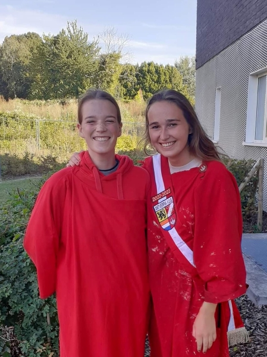
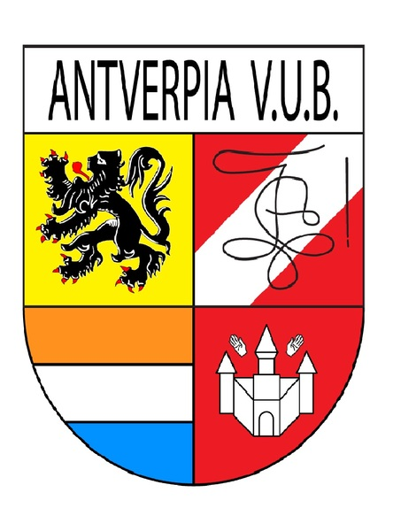

Antverpia VUB
Woord van de Praeses:
Zoë Broers

Beste Antverpianen en sympatisanten
Graag verwelkom ik jullie als praeses op onze website.
Antverpia VUB is een vereniging voor en door studenten uit provincie Antwerpen die in Brussel studeren.
Ik ben verheugd dat ik het voortouw mag nemen als Praeses, samen met het bestuur zullen wij voor een geweldig jaar zorgen voor onze Schachten, Commilitones en Sympatisanten.
De rest van het bestuur kan je hier terugvinden met naam, foto en functie.
Hou onze facebookpagina zeker in de gaten voor komende evenementen, want het belooft een top jaar te worden.
Check ook zeker eens onze instagrampagina, daar plaatsen we ook regelmatig leuke foto's!
Onze eerste activiteit, kampvuur, zal plaatsvinden 29 september.
Hopelijk kan ik jullie allemaal verwelkomen op onze vele activiteiten met een fris pintje erbij!
Cheerio
Zoë Broers - Praeses Antverpia VUB 2022-2023
Clublied
Antwârpe... gij zè ga veur mij
Toch de stad waar azzek zèn gebore
De Greunpleuts, de Meir ... de Keyserlei
Daar hemme kik m'n hart verlore
Antwârpe... waar da'k ik ook ben
Ik kan nievrans mijnen draai ni vinde
'k Weet het 't is flaa...mor ik beken
Bij aa zèn 'k thuis... en onder vrinde
Cheerio, Cheerio,
In Antwerpen daar poepen ze zo
Eerst met de vinger en dan met de fluit
Ge steekt hem erin en ge trekt hem eruit
En zolang er Sinjoren bestaan,
Zal Antwerpen nooit niet vergaan.
Wij weten wat lol is, als 't pintje maar vol is
De rest trekken wij ons niet aan!
